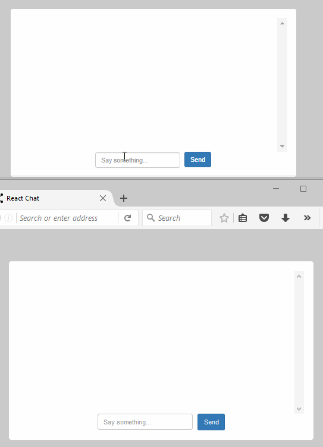
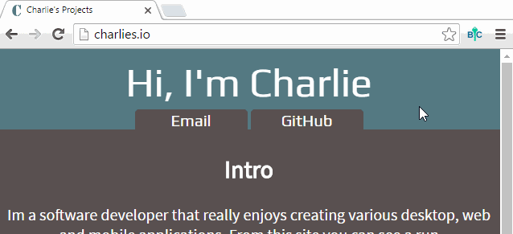

I'm a software developer that really enjoys creating various desktop, web and mobile applications. From this site you can see a run down/explanation of all of the stuff I am working on currently without having to look through all of my pages of GitHub code (unless you want to, of course ). Most of the projects I put on here should be either finished (enough to test out ) or very close.
Projects
X
ChangeDJ - Web Application
What is ChangeDJ?
ChangeDJ unfortunately for me isn't a brand new idea. In fact many sites have come and gone with the same concept as my ChangeDJ. Some examples of these would be Plug.dj, TurnTable, Dubtrack.fm. Essentially ChangeDJ is a modern day Jukebox that lives on the web. Users make playlists from searching for songs using YouTube's search API. They then join the DJ Queue, which is like putting the quarter in the Jukebox. It moves from one users song to the other going down a list. A user never has one of their own songs played twice in a row, unless there is no one else in the queue.
What makes ChangeDJ different?
I created ChangeDJ with one thing in mind, simplicity. I felt that other websites that were doing the same thing over-complicated their web app's. Many of the old ones that are now defunct added far too many gimmicks. Some had avatars that you could create that would dance to your song. Others had a points based system, that would reward frequent users and penalize new users. It was all too much in my opinion. Most users that use this type of web app aren't even looking at the actual web app very often. They are usually browsing other websites and keeping the app's tab open, playing music. Meaning that avatars, and point systems etc. are over doing something that should be simple.
ChangeDJ consists of just five elements:
The first element is a simple websocket chatroom, so users can interact if they feel like it.
The second element is a view of all the songs they have added to their playlist.
The third is a view to search for songs to add to their playlist.
The fourth is the video area that shows the music video of the song the DJ queue is playing.
The fifth is a button to join the DJ queue, so they can start playing their own music.
ReactJS Chat is a simple project that I felt like making as I learn the React framework created by the Facebook team. I decided that since this was my first time using this framework I wanted to create something that was simple enough, but also let me test out some of the things that makes React great. Since React is really good with handling frequently changing applications I figured a chat room that always has messages being input into it would be a great way to see the performance improvements of React.
I wanted to finished this project in a few hours of coming up with the idea. So to make that happen I used Node.js for the server, Bootstrap CSS for the aesthetic of the chat, and of course React for the client-side logic. I didn't feel that implementing a database for this project was necessary because I don't plan on anyone actually using this application.
Preview of ReactJS Chat
*This application's preview has been heavily condensed to fit on this webpage in .gif format
View .GIF preview of this application. You will want to open two tabs, or have a friend try the chat with you on another computer to see the full effect.
↑
X
CreateSkeleton - Desktop Application
What is CreateSkeleton?
If you have never made a Node.js application, and you never plan on making one, then this desktop application will not be for you. If you have however or do plan on starting make Node.js applications then this application is definitely a useful tool to have. Setting up a full stack Node app is tedious. It takes tooling with npm, setting up possibly 10+ directories, setting up many base files, writing up your Node.js server and more.
One day I decided for a week I wanted to do a Node project a day to show on my GitHub. By the third day I was so annoyed by how much of each day was spent just setting up a base project. So I decided that I would create a better way to get a Node.js project on its feet. That's when I developed CreateSkeleton. Instead of going through the usual start up hassle, all you have to do to get your project started is decide where you want your base project directory to go. In the preview below you can see with CreateSkeleton it only takes seconds now to get a base Node.js Applicaton.
If you use Microsoft Windows to create your Node.js apps you can download the production version of CreateSkeleton by clicking the download button below:
↑
X
YT Sync - Browser Extension
What is YT Sync?
YT Sync is my most under construction project currently. It is a bit of a silly project, but I could see some people using it. YT Sync is a Google Chrome Browser Extension. For those that are unsure of what a browser extension is, ill give a quick explaination the best I can. A browser extension is an addon to your exisiting browser. It allows developers to make changes to your browser to make things easier, or add more functionality to already made websites. The most popular browser extension is a utility that blocks invasive advertisments. My browser extension YT Sync allows you and a friend anywhere in the world to watch a Youtube video together in perfect synchronization.
Like I said earlier it's a bit silly but it could have some nice use cases. I think that if you wanted to listen to a playlist of music with a friend this would work great for that. If you wanted to watch a really long Youtube video with a friend this is a great tool for that. I'm sure there are even use cases for it I haven't even thought of yet.
BookCrypt is a Google Chrome Browser Extension. It's entire purpose is to provide a safe and easy way to store the browser bookmarks you want to keep hidden from others. If you want to store bookmarks that you feel is sensitive information, than this extension is for you. If you feel like you want to keep your bookmarks secure from hackers, or even other users on your computer than this is for you. If you just enjoy safe and secure bookmark privacy, well then this is perfect for you.
BrookCrypt has end to end encryption of you bookmarks. Also unlike other similar extensions BookCrypt never sends any of your data out to any cloud servers. All of your bookmarks are stored safely on your own computer. Bookcrypt doesn't even require any special permissions!
Preview of BookCrypt
*This application's preview has been heavily condensed to fit on this webpage in .gif format
View .GIF that demonstrates how to add a bookmark.
All you need to do to add an encrypted bookmark to your bookmark list is simply login, then click on the "Bookmark Current Page" button! If you don't feel like coming up with your own bookmark name you can leave the option blank and the name will automatically be the title of the current page you are on. As seen in the GIF above.